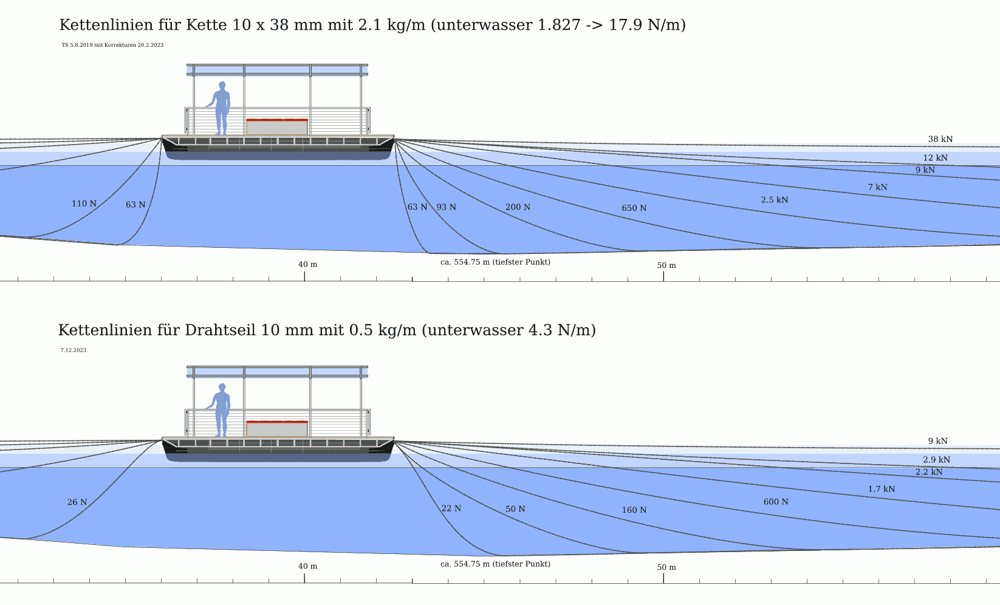
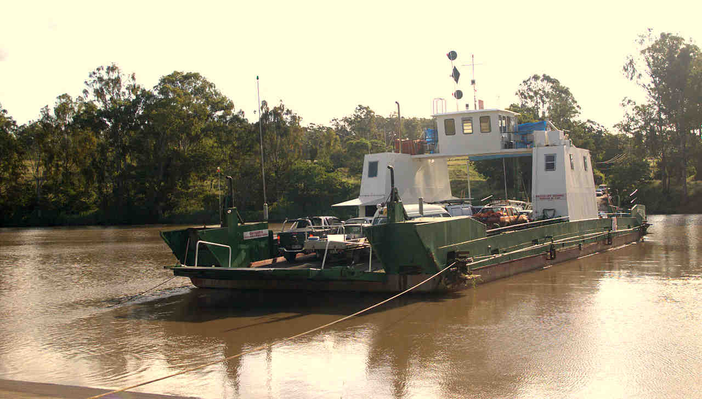
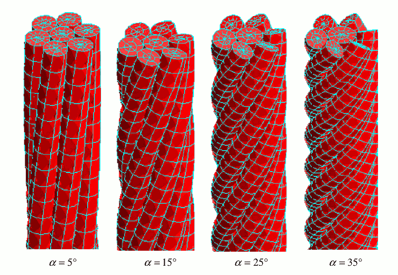
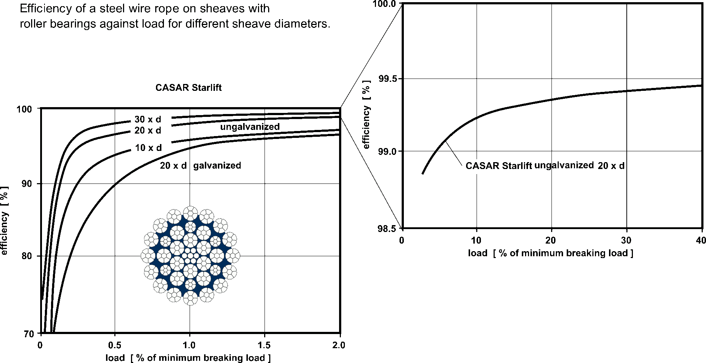

Contents | About | Contact
article 34, issue 14
Theo Schmidt
December 21, 2023
This is part three of a three-part series on maximising the efficiency of cable ferries. Part one was an introduction and part two quantified mainly cable ferries using chain. In the following these are compared to cable ferries using wire rope, with the aim of identifying for each situation the most suitable system for use with minimal power or ambient power.
The term cable ferry is used for ferries crossing bodies of water by the means of cables that can be chains - usually metallic ones normally lying on the bottom or ground - or ropes, mostly also metallic, that can also normally lie loosely on the ground, or held under tension underwater, or held afloat by buoys, or held tightly stretched over the water surface. If the ferry uses the water current of a river or tidal stream for propulsion, it is called a reaction ferry. This article is mainly concerned with those cables that lie on the ground and are picked up by the ferry as it crosses, and which type of cable, chain or wire rope, is most suitable for which conditions.
An important characteristic of a ground cable is its weight underwater, as this is what influences the shape of its catenary and its forces, as explained in part 2. The manufacturers of chains and ropes list their mass per length, e.g. in kg/m for chains and kg per 100 m for ropes. What we need is the submerged weight. To get this, the buoyant force is subtracted from the dry weight, which is the mass times earth's g and applies to the unsubmerged cable parts. For the submerged weight in one step, multiply the mass (kg) per distance values by 8.54 to get Newtons (N) per distance. This number contains earth's defined average g of 9.80665 m/s², an assumed average steel alloy density of 7840 kg/m³ and an average water density of 1010 kg/m³ (between fresh water and sea water), i.e. 9.80665 * (1 - 1010/7840). All these can vary slightly, so the factor can be between 8.45 and 8.6 depending on the location and type of steel. Whereas the underwater weight of chains or single wires can be closely defined, wire ropes are made up of numerous wires in several strands forming voids with varying weights and buoyancies depending on what they are filled with: air, lubricant or plastic.
As examples, a 6 mm chain with a unit mass of 0.8 kg/m weighs about 6.8 N/m underwater. For a 10 mm chain it is about 2.2 kg/m and 19 N/m. A 6 mm wire rope has a unit mass of between 0.15 to 0.2 kg/m, depending on construction, and weighs 1.3-1.7 N/m underwater, a 10 mm rope typically 0.5 kg/m and 4.3 N/m (neglecting the buoyancy of voids).
The following figure compares the approximate tensions in the catenaries of a 10 mm (non-ISO) chain (top) and a 10 mm wire rope (bottom), all assumed to be entirely underwater. It becomes apparent that for the same tension, the catenary of the wire rope is shallower.
Cables are usually defined by their minimum breaking strength (MBS) and thus listed by the suppliers or manufacturers of chains or wire ropes. This can be the destructively tested MBS of actual cables just before they actually break, but it is more often a theoretically calculated value, the product of the material's assumed ultimate tensile strength and the minimal effective cross section area of the given chain or rope. The tensile strength of steel can vary from about 300 N/mm² or MPa for low-carbon structural or mild steel to 3 GPa for the strongest heat-treated high-carbon steel wires. A lower value is the yield strength where cables start to be pulled permanently out of shape. Depending on the steel this is 40-70% of the ultimate tensile strength.
Of course a chain or rope should not be loaded up to its yield strength and never to its MBS. The maximum operational load is called the working load limit (WLL). It can be determined by dividing the MBS by a defined safety factor (SF). WLL = MBS / SF. Safety factors of 4 to 8 are in use; 5 is the most usual one for moving rope and chain applications. 10 can be mandated for very critical applications.
Chains are made of steel with tensile strengths from 300 to 1000 Mpa that are sometimes named as grades, e.g. grade 30 for 300 MPa. All sorts of alloys, treatments (tempering or case-hardening) and coatings are available. Stainless steel alloys are typically in the mid-range. The cross section of round link chains in mm² is ½ π d² for sizes given in mm. A 10 mm grade 80 chain thus has a nominal MBS of ~125 kN.
Wire ropes are generally made of stronger steel than chains, sometimes with ultimate tensile strengths of 1960, 2160 MPa, or even 2360 MPa. These values come from older definitions:
1570 MPa for PS (plow steel)
1770 MPa for IPS (improved PS)
1960 MPa for EIPS (extra IPS)
2160 MPa for EEIPS (extra EIPS)
Determining the actual metallic cross section of a wire rope is not straightforward and is done by taking the nominal diameter of the rope to get the nominal rope area (¼ π d²) and multiplying this by the average metallic fill factor. Simple ropes or strands with same-size wires and a metallic core theoretically allow fill factors of 0.78-0.8. Flexible wire ropes with hundreds of different-size wires which are even compacted, that is squashed together into non-circular shapes, could have higher fill factors but they turn out lower because the strands and layers are often separated by plastic. As an example, a CASAR Starlift Plus wire rope has a metallic fill factor of 0.562 indicated. Thus such a rope with 10 mm nominal diameter has a metallic cross section area of 0.562⋅25⋅π ≈ 44.14 mm² and when multiplied by 1.96 kN/mm² we get 86.5 kN, near enough the published value of 92 kN.
Comparing chains and wire ropes, their strengths turn out roughly similar for the same nominal size. This is because a chain has several times the metallic cross section of a wire rope of the same defined size, but wires are generally made of steel alloys with several times the tensile strength as those used for chains. A chain is, however, several times heavier and larger in practical terms, than a wire rope of the same nominal size. Although heavier, a moderately-sized chain is easier to handle manually as it can be securely gripped and because of its flexibility.
This picture by Mokgen of the Moggill Ferry across the Brisbane river in Australia shows typical stretched catenaries of cable ferries using wire ropes. The rope visible is for guiding only.
A chain is almost completely flexible when considering at least several links. It therefore forms a practically perfect catenary curve under gravity right from where it leaves or joins one of the ferry's end-pulleys, even if the entry angle is very steep and when there is little pulling force. This is due to the chain's combination of extreme flexibilty and considerable weight. With more pulling force, the entry angle is shallower but normally still steep enough for other shipping to cross safely within one or several boat-lengths. See part two, some of the pictures here, and the drawing given earlier.
A wire rope exhibits a certain degree of bending stiffness and therefore behaves locally near pulley sheaves somewhat as a cantilever beam, yet forms a reasonable catenary where its free length is much greater than its diameter. As it resists bending at the ferry's end-pulleys and has less weight than an equivalent chain, a wire rope has a shallower angle of entry, as can be seen in practice, e.g. in this photo of the Canadian Arrow Park Cable Ferry, also showing the notice «KEEP CLEAR – 100 METERS», and in the two-part drawing given earlier. For the wire rope there, the very steepest catenary is left away as unrealistic and in the remaining steep curve the cantilever-effect is indicated slightly: it is not a pure catenary, but an S-shaped curve. Probably the next curve or two should exhibit slight S-bends as well.
The calculation of the shape and further characteristics of a wire rope near a support or sheave are not straightforward. Its bending stiffness EI is made up of the material's Young's modulus (E, about 200 GPa for steel) and the cross-section's equivalent second moment of area (I in m4). I is well definable for solid cross-sections such as single wires or parallel bundles of wires that are either rigidly locked together or free to slide without friction, but what actually happens is that the helically-shaped wires and strands sometimes lock together and sometimes slide with an unknown amount of friction, which is in any case dependent on the rope's tension. The problem is solvable and described in Ghoreishi, Messager, Cartraud, and Davies (2007). Numerical simulations using finite element analysis have been used for calculating the shape of electric power lines at their mast-supports or the deflection of wire rope road barriers. There are many different constructions and types of wire ropes. Some are galvanised, some include fiber or plastic fillers and most are at least pre-lubricated. This influences the friction between wires and strands. As they are not parallel but laid up helically, the lay angle is a further parameter. The following diagram from the Ghoreishi, Messager, Cartraud, and Davies article shows both the way numerical meshes are modelled and the lay angles they worked with.
The bending stiffness of a wire rope becomes important when it is bent around sheaves that can be part of the drive system or guiding pulleys. The larger the sheave's diameter D in relation to the rope's diameter d, the smaller the energy losses and the longer the lifetime of the rope. For systems in frequent use D/d ratios of at least 30 are recommended, and more is better. The aforementioned Arrow Park cable ferry shows a much smaller ratio on its end pulleys for one of the guiding ropes, less than 10. From the picture it is clear why: such pulleys are heavy and in this case need to be able to swivel horizontally as well as vertically. For this, a very large and heavy pulley would have to be counterweighted or fitted with springs in order to avoid undo wear on a misaligned rope. Or constructed much more lightly, rather like a bicycle wheel. However, the deflection angle when under tension is slight, so the ratio here seems acceptable.
For the driving sheave(s) it is another matter. In order to provide enough force, wrap angles on the order of 180° are required and it pays to use sheaves as large as can be accommodated, especially as they are fixed and do not need to swing like end-pulleys.
In part 2 typical configurations of chain drives were shown. These are unsuitable for wire ropes, either because the wrap angle is insufficient or because the cable is bent first in one direction and then in the other, which should be avoided according to various wire rope literature. The preferred configuration seems to be with a wire rope going around two opposing sheaves, as shown in the schematic. This allows a driving wrap of 180° if one is driven and 360° if both are.
In order to avoid the rope rubbing on flanges or itself, the two sheaves must be slightly skewed against each other and/or include a further guiding sheave, as shown in the photo of the Australian Sackville cable ferry's drive (by Gnangarra, Wikimedia Commons).
The question is now what tension is needed to provide enough friction for the ferry's propulsion or how the drive must be constructed for a given tension.
A rope wrapped around a sheave that is powered or braked has higher tension on one side (Ttaut or Tload) and a lower one on the other side (Tslack or Thold). The maximum force Ttaut that can held without slipping by means of the smaller force Tslack is given by the capstan equation:
Ttaut = Tslack e μ ϕ
where μ is the friction coefficient, ϕ the angle of wrap (radians), both between rope and sheave, and e is about 2.72. In order to determine the torque and power of a driving sheave we need the difference force:F = Ttaut− Tslack = (e μ ϕ − 1) Tslack = (1 − e− μ ϕ) Ttaut
A wrap angle of 180° is π radians and the friction coefficient could be 0.5 if the driving sheave is lined with rubber. Then we have F = 3.8 Tslack or 0.8 Ttaut. Note that this is independent of the rope or sheave diameters. However, the equation doesn't include bending stiffness so the more flexible and the smaller the rope or the larger the sheave, the more accurate the formula. Centrifugal force also isn't included and in this application is negligible. If both sheaves are driven, ϕ becomes 2 π and F becomes about 22 Tslack or 0.95 Ttaut. For normal crossing in still water this means the tension in the direction of moving Ttaut is only little more than the propulsive force F required at the chosen speed. The tension to the rear can be as low as Tslack.
Using the catamaran given in part 1 as an example, this requires a propulsive force of 140 N, 313 N, or 565 N when moving at 1 m/s, 1.5 m/s or 2 m/s. Thus the worst combination, one driven sheave at 2 m/s, needs Ttaut = 706 N, and according to the diagram given earlier, a 10 mm wire rope catenary would be steep enough to normally present no danger to small craft crossing ahead in a reasonable distance. But not steep enough for large craft or yachts with keels.
The efficiency of chains was treated in part two, with quantified losses of the chain links articulating against each other when going around a pulley sheave or chainwheel. The friction is about inversely proportional to the sheave diameter. There appears to be no available data on the energy efficiency of round-link chain drives except the 1909 thesis of Albert Wilson Ames "The Efficiency of various Hand Hoists". He measured efficiencies of up to 78% for a complete hand hoist using each two chains, chain wheels and spur gears with several journal bearings at ~29:1 speed ratio. Newer papers on electric chain hoists focus on power and vibration, not efficiency. Other publications treat mainly function, lifetime and wear. As friction is about proportional to chain tension, the "dead weight" of even a slack chain produces a minimal level of friction even at low power levels, depending on the depth of water. Therefore the efficiency of a ferry chain increases with load and crossing speed, but it decreases with lateral water current as discussed in part 2.
With wire ropes the losses are quite different. A single steel wire behaves like a spring, below its yield strength being almost perfectly elastic in the physical sense, and when unbent returns almost all the force and energy used to bend it. Only a small amount of energy is lost as hysteresis. The energy efficiency of a single wire going around a sufficiently large sheave can be taken to be practically 100%.
Single-wire ropes are not practical or safe for most purposes and wire ropes generally consist of 6 or more wires wound helically around a 7th wire or core, as shown in the schematic given earlier. Most consist of many more wires, sometimes hundreds, organised into strands themselves wound around a core. This makes such wire ropes more flexible and the question is how to quantify their energy efficiency.
There are more publications and data on wire ropes than chains because they are in such widespread use in both static and dynamic applications, e.g. elevators, cable cars and cranes, to name just three. Because these move heavy loads over long periods of time, energy efficiency is important. Before the widespread use of electricity, rope drives, invented in 1850, were used to transmit power over considerable distances as described in Lowtechmagazine: "The mechanical transmission of power". This article lists early literature on wire ropes and drives, such as the valuable "Transmission of power by wire ropes", Albert W. Stahl 1889 (based partially on Roebling 1872) and many more. On page 121 Stahl gives the best measured efficiency of a rope drive (endless wire rope over two sheaves) as 96.2% including bearings. An earlier reference Beringer 1883 gives 96-96.6% over a 100-150 m distance. Thus we can assume 98% per sheave for the equipment of this time. According to the authors most of the loss is due to the journal bearings. See also the very comprehensive 270-page book "Rope-Driving: a treatise on the transmission of power by means of fibrous ropes", John Joseph Flather 1895. These books give detailed plans and calculations but after them there appears to be no more readily findable literature covering the energy efficiency of ropes going around sheaves. At least until Roland Vereet, then working for wire rope manufacturer CASAR, performed a series of efficiency measurements of several CASAR ropes and wrote a number of still available excellent brochures that include these efficiency data, e.g. republished in the 1997 CASAR Technical Documentation (page 21). Using these, Jerzy Hajduk in "Einfluß der Biegesteifigkeit umschlingender Zugelemente auf den System-Wirkungsgrad" (1990) analysed them thoroughly.
The efficiency of a rope moving around a sheave is defined as the ratio of forces of the two parts when moving. Hadjuk describes how this was measured (presumably at CASAR) by laying the wire rope around a pulley and attaching two identical weights to the two parts, so that 180° wrap is achieved. One part is then loaded with a small additional weight until it just moves. The force of the part leaving the sheave is thus slightly higher than the part entering. This definition includes the friction of the sheave's bearing. It can be seen in the figures of the above two references and the one below that high efficiencies are achieved when the wire rope is loaded with at least a few percent of its minimal breaking strength. The main influencing factor is the sheave-to-rope diameter ratio D/d. At least 10 is desirable anyway, better 20, in order to avoid premature ageing with loss of strength due to breakage of wires. (Stahl 1889 for 6x7 wire ropes recommends at least 80.) With D/d of 30 and more the efficiency starts to become really good, at least with tension in the rope of over (say) 0.4% of its breaking strength.
Hadjuk derives equations first for purely elastic bending, as with a single wire or multiple wires either locked together or completely without friction, and then plastic bending as usually occurs due to the wires and strands rubbing against each other. In the first case the main energy loss is due to the pulley's bearing and some to sliding between rope and sheave. In the second case the rope uses up energy both for bending and for unbending.
Hadjuk stated that rope losses are mostly due to plastic bending. He took Vereet's plots of efficiency data for CASAR's Starlift wire rope and managed to derive efficiency equations with the same tendencies. The figure below shows data for the CASAR Starlift wire rope from its 1997 technical manual. It shows the strong dependency on the sheave/rope diameter ratio and the rope's tension. A 10 mm Starlift rope has a minimal breaking strength of 92-103 kN depending on the alloy used, so that with the example given earlier, a tension of 706 N would be roughly 0.7% of the MBS and result in an efficiency of about 98% with a 300 mm sheave. The Starlift is not quite CASAR's most efficient rope, but the best documented. The data also shows that the efficiency of the galvanised version is lower. This is plausible as galvanised wires have a larger coefficient of friction than ungalvanised ones.
These data appear to be for a wrap angle of 180°. Unlike chain, where the efficiency is independent of the angle of wrap once two links have fully articulated, the wires and strands of a wire rope exhibit friction from inelastic bending during the whole angle of deflection, so that a smaller wrap angle should result in a smaller frictional loss. This applies even to 100% elastic bending as there is some sliding between the rope's inner surface and the sheave, except at that load where there is neither compression nor distension at the interface.
The question is what we are really observing here. According to Bart de Jong (2015) stiffness EI is highly variable and depends on more than the factors given so far. When a wire rope with helically wound wires and strands is loaded in tension, inwardly radial force components increase the friction between wires and strands. When the rope is bent with a large D/d ratio and under high tension, the wires and strands are locked together by this friction and the total packet behaves elastically. It seems that that a rope under tension approaching a sheave also has a brief distance of elastic bending, but then the wires and strands slip plastically with strongly decreased bending stiffness. If plastic bending is unavoidable, it should pay to promote low-friction slipping with good lubrication and smooth wires.
In any case, the CASAR efficiency curves show that the better flexible wire ropes can approach or even exceed 99.5% efficiency when well-tensioned, including (unspecified) roller bearings in D/d=30 sheaves. Lightly tensioned at 0.1% MBS, these ropes achieve about 80% efficiency.
The company Verope also has information on efficiency with diagrams. They show an efficiency of 99.5% for over 6% of the MBS and 95% for 0.25% MBS for unspecified ropes and conditions. And uniquely a plot of efficiency measurements over time: a peak of 99.7% at 60% lifetime and still 99.6% at the end of life – where a specified number of wires have broken or bending cycles have been endured.
With the given definition of the efficiency of a wire rope loaded with tension F wrapping 180° around a sheave and requiring a small force ffric to move it being η = F / F + ffric we get ffric = F (1/η – 1) and at speed V the corresponding power loss Pfric = F V (1/η – 1).
Taking the earlier example of a ferry with F = 706 N and η = 98%, the power loss would be 29 W at 2 m/s crossing speed. This is only a rough estimate, as the rope's tension decreases along the drive train and especially after the driven sheave. According to the capstan equation, we need 706 N before the driven sheave and 149 N after it. Therefore both the efficiency and the power loss become less moving toward the sheave's exit. If we average the two figures to 428 N and assume an efficiency of then 97%, the loss would be 26 W. The second – undriven – main sheave loaded at 149 N could have 95% efficiency and lose 16 W. If both sheaves were driven the result would be different but probably not by much. Now we need to add losses of the minimum of two guiding pulleys. The one in front guides the rope under 706 N tension and deflects this with perhaps 20° according to the catenaries given earlier. Unlike a chain, there must be fewer losses at smaller wrap angles. If we assume a linear relationship, this pulley's loss would be 20/180 = 1/9 of 29 W if it were the same size, i.e. 30 times the rope diameter. Even making it smaller wouldn't matter much. The rope passes the rear guiding pulley under 149 N tension at perhaps 50° deflection. The loss could be 50/180 of 16 W, also very little, giving a total of about 50 W loss for 1040 W propulsive power. Roughly the same as the same configuration with a 10 mm chain with 4 sheaves of 0.3 m diameter.
With the lateral current of a river or tidal stream the calculation changes. Taking again the catamaran of part 2, figure 8, a lateral current of 1 m/s produces a loss of 2500 W due to the friction of a chain tensioned to 5 kN by the lateral force on the ferry. This reduces to 2190 W for 4 sheaves of 0.3 m diameter, instead of 5 sheaves of 0.2 m as used for figure 8. It is still almost twice the needed propulsive power at 2 m/s crossing speed.
It would seem that their efficiency advantages would make wire ropes always the preferred choice for small human-powered ferry crossings. However, there are also some practical disadvantages because available wire ropes of suitable sizes are light and thin, yet relatively stiff:
The actual practice for cable ferries in operation worldwide appears to reflect this article's conclusions to some degree, but also the historical context of the crossing. For example, the numerous cable ferries across Australian and Canadian rivers seem to use wire ropes exclusively, whereas the older crossings across busy tidal rivers in England all use chain. In Germany, several river crossings were originally reaction ferries and later kept a wire rope for holding position but introduced a chain for propulsion.
Wire ropes, being less deep in the water and less visible, present a certain risk especially to small craft attempting to pass too closely, as reported for an accident on the Australian Brisbane river with the Moggill Ferry pictured earlier.
In this three-part article we explored details of chain ferry crossings using floating piers, power requirements, how to work out catenaries, excursions to turntable reaction ferries and optimal hull shapes for lateral currents. Then efficiency comparisions between chain and wire rope with these conclusions:
{kind=link}
{kind=link}
{kind=link}
{kind=link}